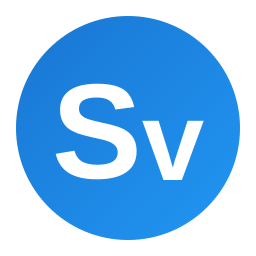
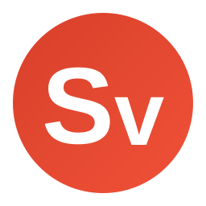

Feed an AI one sentence at a time and you get good sentences and a poor translation. Supervertaler gives it what a translator would have: the rest of the document, your confirmed segments, your terminology, what you know about the client – even the list numbering and figures the grid never shows.
It reads like a translation by someone who has read the whole document – because the AI has.
One licence, both plugins. €20 a month or €200 a year covers Supervertaler for Trados and Supervertaler for memoQ. Use either, or both – no second subscription for working in a second tool. Pricing
Inside Trados Studio 2022, 2024 or 2026.
Try free for 14 days →Inside memoQ 11 or 12.
Try free for 14 days →The free system-wide toolbox for translators. Select text in any Windows app and act on it.
Get it free →

Supervertaler for TradosTrados Studio 2022, 2024 and 2026, as dockable panels inside Studio.

Supervertaler for memoQmemoQ 11 and 12, as an MT engine, a terminology provider and a companion window.
Every request assembles a fresh snapshot of your work – ten layers of it – and hands the whole thing to the AI. Some layers come from the CAT tool, some from what you have recorded about the client, and two from parts of the document no CAT tool normally shows you at all: the list numbering Word generates rather than stores, and the figures.
A published Dutch patent, translated in memoQ by a model you can run on your own computer and by Claude Opus 5.5, then compared paragraph by paragraph with its official English. Six house rules added to SuperMemory, one line each, were applied on the very next run, and Claude flagged a drafting error in the Dutch claims.